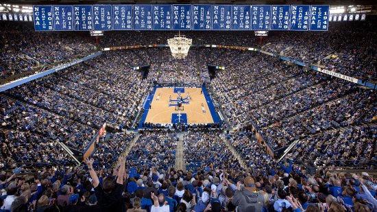
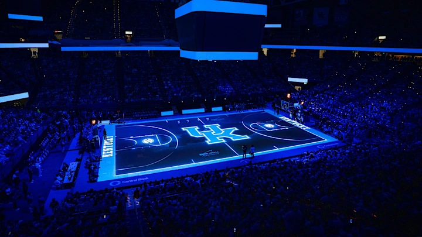
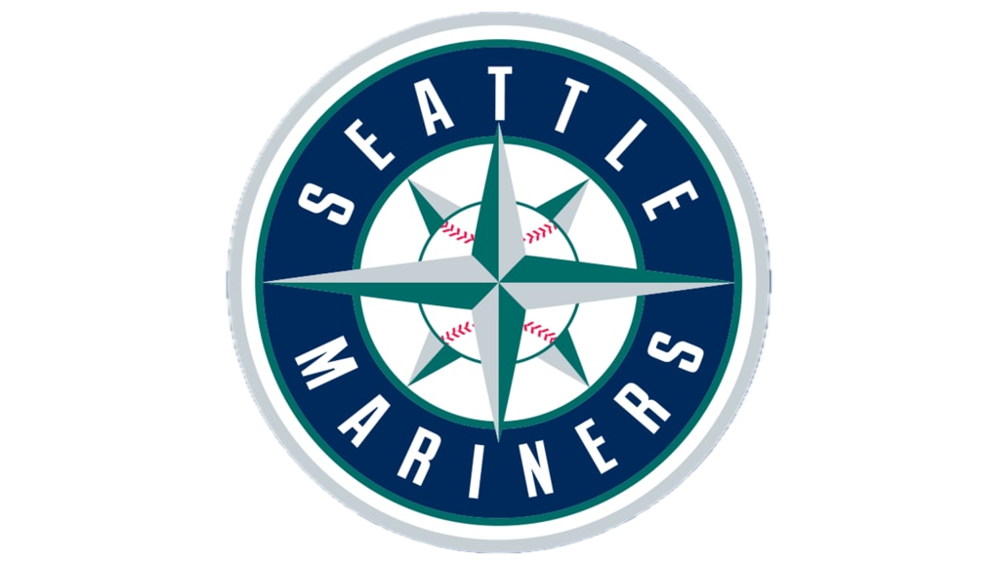

Why These Teams Matter
I follow these teams because they actually mean something to me, not just because they’re good. For example, with Kentucky, I grew up in Lexington, so being around the fans and the atmosphere made it something I’ve stuck with. Over time, that connection is what made these teams the ones I keep coming back to.
About This Site
This site shows my favorite teams and why I follow them.

Kentucky
Kentucky basketball has one of the best atmospheres in college sports.

Mariners
Baseball lets you follow a team over a long season.

Seahawks
The Seahawks have one of the best and loudest fanbases in football, their stadium, Lumen Field has broken multiple noise recors over the years.